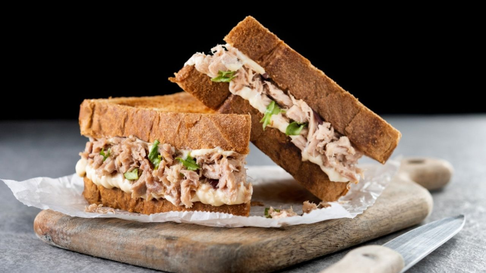

Sanduíche de Atum
Uma receita rápida e saborosa para o seu lanche.
Ingredientes
- 1 lata de atum
- 2 fatias de pão integral
- Alface a gosto
- Maionese
Modo de Preparo
Abra a lata de atum e misture com a maionese. Coloque o atum sobre o pão, adicione alface e feche o sanduíche.
Wrap de Frango
Wrap saudável e delicioso para o seu lanche.
Ingredientes
- Peito de frango grelhado
- Tortilla de trigo
- Alface, tomate e molho a gosto
Modo de Preparo
Coloque o peito de frango, alface, tomate e molho na tortilla. Enrole e sirva.